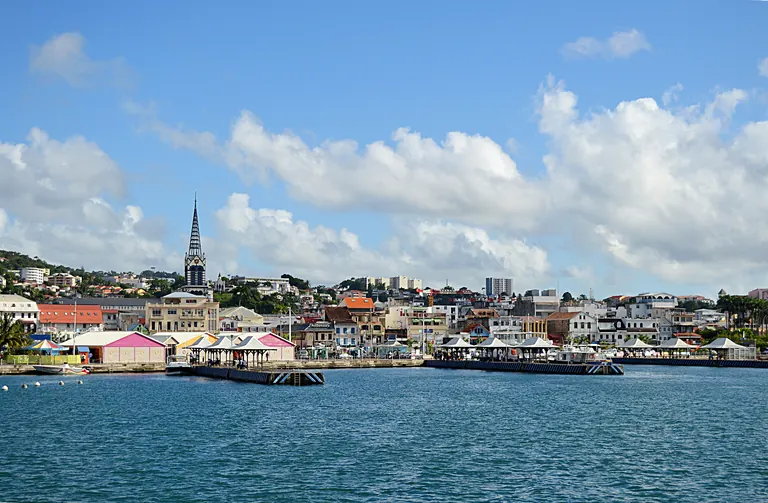

Comprendre les difficultés de la Martinique depuis 2009
Partir des faits réels avant de proposer des solutions.
Cette rubrique présente les crises, alertes sociales, ruptures économiques et fragilités structurelles qui ont marqué la Martinique depuis la grève générale de 2009 jusqu'à la situation actuelle.
Dossiers documentaires
Mettre les faits, les images et les responsabilités sur la table.
Le Diagnostic MADA doit raconter l'histoire récente de la Martinique avec des sources, des reportages, des acteurs identifiés et des suites politiques clairement expliquées.

Vie chère
Prix alimentaires, grandes enseignes, marges et pouvoir d'achat
Comprendre les écarts avec l'Hexagone, les circuits d'importation, l'octroi de mer, les distributeurs et les engagements publics pris depuis 2009.
Zones économiques, embouteillages et communes délaissées
Analyser la concentration commerciale et industrielle autour du centre, ses effets sur les routes, les familles, les communes et le développement local.
Population360 630INSEE RP 2023Prix alimentaires+40 %écart souvent cité en 2024Pauvreté26,7 %repère public cité en 2024, à consolider INSEEBudget CTM1,519 Md€budget général 2026Communes34territoires à documenterDepuis 200917 ansd'alertes répétées
Ces compteurs sont des repères pédagogiques. Ils doivent être actualisés chaque année avec INSEE, CTM, ARS, Préfecture, IEDOM, Office de l'eau et organismes publics compétents.
Pourquoi commencer en 2009 ?
Un point de bascule dans la conscience martiniquaise
Pour MADA, 2009 n'est pas choisi par nostalgie ni pour enfermer la Martinique dans une crise passée. Cette date est un repère parce qu'elle a mis au grand jour des sujets qui structurent encore la vie quotidienne : prix élevés, salaires, pouvoir d'achat, organisation des circuits économiques, confiance dans les institutions et demande de transparence.
Partir de 2009 permet de mesurer ce qui a été obtenu, ce qui a seulement été annoncé, ce qui reste bloqué et ce qui doit maintenant devenir un programme de transformation durable pour la Martinique.
Vie chèreLa question des prix est devenue une exigence politique centrale.TransparenceLes Martiniquais ont demandé à comprendre qui fixe les prix, qui contrôle et qui décide.Modèle économiqueLa dépendance aux importations et les circuits de distribution ont été placés au centre du débat.Responsabilités publiquesLa crise a montré la nécessité d'identifier clairement le rôle de l'État, de la CTM, des communes et des acteurs économiques.
Frise chronologique
Vingt ans de crises et d'alertes
Chaque épisode révèle une difficulté structurelle : prix, revenus, eau, santé, logement, jeunesse, gouvernance et confiance publique.
Grève générale contre la vie chère
Contexte : mobilisation sociale autour des prix, des salaires, des monopoles et du pouvoir d'achat.
Revendications : baisse des prix, augmentation des revenus, transparence économique.
Résultats : accords sociaux partiels, prise de conscience durable.
Non obtenu : transformation profonde de la structure des prix.
Impact : la vie chère devient un sujet central et durable du débat martiniquais.
Chômage, départ des jeunes, fragilité économique
Contexte : difficultés d'insertion, vieillissement, départ des talents, pouvoir d'achat sous pression.